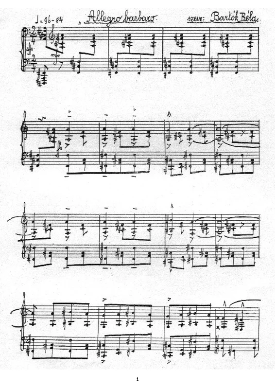

← Sandbox
All music
Bartók — Allegro barbaro, Sz.49
Performance
Allegro barbaro, Sz. 49
· Dénes Várjon · 2:31
Play recording
Watch on YouTube
Sheet music
Score editions on IMSLP
Publisher’s MIDI files
Score facsimile
